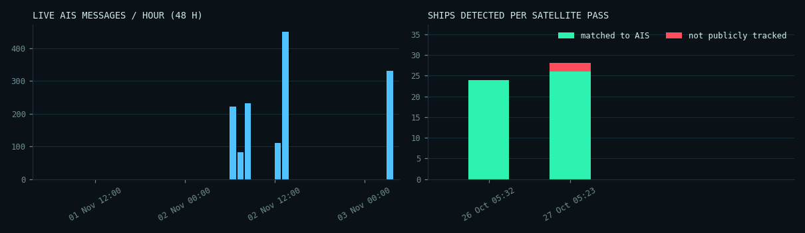

SECTOR // DENMARK · 55.55–55.85°N · 12.55–12.95°E
Oresund, Copenhagen (Denmark/Sweden)
Validation area. Sentinel-1 images it almost daily and coastal AIS coverage is dense, so the full match between radar and AIS can be shown and checked.
Live AIS feed
RECEIVING
last message 0 min ago
Ships broadcasting · 30 min
58
Matched · latest pass
26
Not tracked · high confidence
0
Not tracked · low confidence
2
Tactical map
Showing pass S1-Oresund-20261027 · 2026-10-27 05:23 UTC
matched to AISnot tracked · high confidence
not tracked · low confidencelive AIS position
Pass log
| pass (UTC) | ships | matched | not tracked | low conf. | match rate | AIS msgs |
|---|---|---|---|---|---|---|
| 2026-10-27 05:23 UTC | 28 | 26 | 0 | 2 | 93% | 10687 |
| 2026-10-26 05:32 UTC | 24 | 24 | 0 | 0 | 100% | 11603 |
Telemetry

Feed gaps in the last 24 h: 8 (1142 min) · AIS messages in the last hour: 330
Recent Sentinel-1 acquisitions
- 2026-11-02 05:23 UTC
- 2026-11-01 16:44 UTC
- 2026-11-01 05:31 UTC
- 2026-10-31 16:52 UTC
- 2026-10-30 17:00 UTC
- 2026-10-27 05:23 UTC
- 2026-10-26 05:32 UTC
- 2026-10-25 16:52 UTC